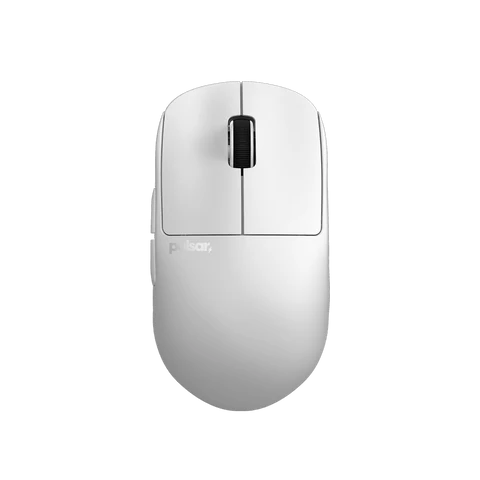

Nama : M SUltan Hafidz H
NIM : A12.2024.07163
Alamat : Semarang
Pulsar X2H adalah salah satu mouse gaming ringan yang dirancang untuk pemain yang mengutamakan kecepatan, presisi, dan kenyamanan. Mouse ini merupakan versi high profile dari Pulsar X2, sehingga bagian punggung mouse lebih tinggi dan memberikan support lebih baik untuk telapak tangan, khususnya bagi pengguna dengan gaya genggaman palm grip atau claw grip. Dengan bobot yang sangat ringan, sekitar 54 gram, X2H menawarkan kontrol yang responsif tanpa membuat tangan cepat lelah, cocok digunakan dalam sesi gaming kompetitif yang panjang. Dari sisi performa, Pulsar X2H dibekali sensor PixArt PAW3395, salah satu sensor terbaik saat ini dengan DPI hingga 26.000 dan polling rate tinggi untuk memastikan tracking yang akurat. Ditambah lagi dengan switch berkualitas dan desain simetris tanpa honeycomb holes, mouse ini tidak hanya kuat tetapi juga terlihat bersih dan modern. Kombinasi desain ergonomis, bobot ringan, serta performa tinggi membuat Pulsar X2H menjadi pilihan menarik bagi gamer yang mencari keseimbangan antara kenyamanan dan kecepatan. Website
